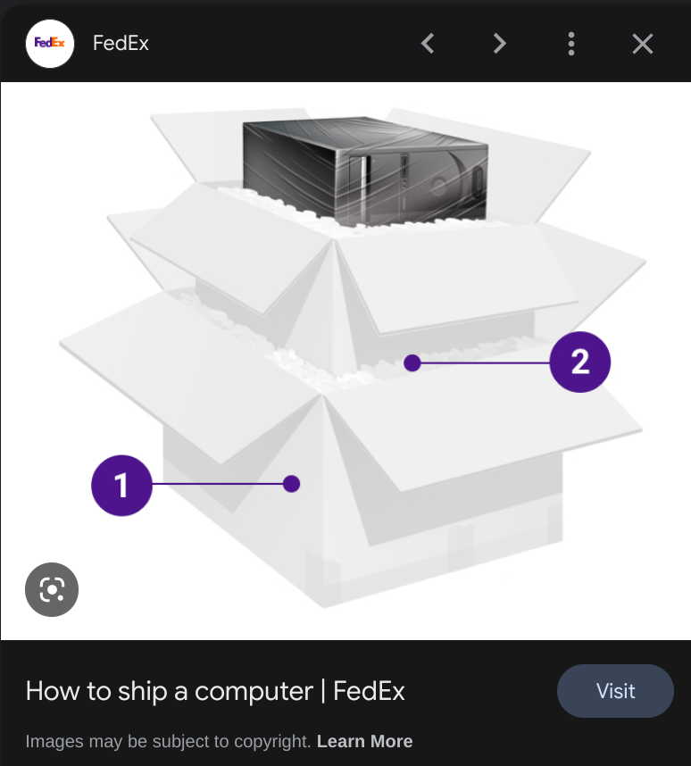
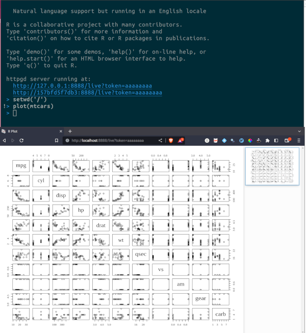

Why you should consider working on a dockerized development environment

Last year I wrote a post about dockerizing {targets}’s pipelines (link to post) and between that blog post and this one, I’ve written a whole book on building reproducible analytical pipelines that you can read here (for free!). In the book I explain how you can build projects that will stay reproducible thanks to Docker. With Docker, you don’t only ship the code to your project, but ship a whole computer with it, and your project will be executed inside that computer. By whole computer I mean the whole computational environment: so a version of R, the required packages your project depends on, all of it running on a Linux distribution (usually Ubuntu). The whole project can then be executed like any program from your computer (whether you’re running Windows, macOS or Linux) or even on the cloud with a single command.
In this blog post, I’ll discuss something that I’ve been trying for some time now: working directly from a dockerized environment. The idea is to have a Docker image that comes with R, all the usual packages I use for development, Quarto, a LaTeX distribution (that I installed with {tinytex}) and finally, my IDE of choice, Spacemacs (if you use RStudio, just read on, I’ll explain how you can achieve the same thing but with RStudio instead). Why do this? Well because this way I can deploy the exact same environment anywhere. If I get a new computer, I’m only one command line away from a functioning environment. If I want to dockerize a {targets} pipeline, I can write a new Dockerfile that builds upon this image which ensures that there are no discrepancies between the development environment and the production environment. And because I’m building the image on top of a Rocker image, everything just work. If I need to install a package that might be tricky to install (for example, a package that depends on {rJava}, using Docker might be the simplest way to get it to work.
So, here’s the Dockerfile:
# This builds upon the Rocker project's versioned image for R version 4.3
FROM rocker/r-ver:4.3
# install `gpg-agent` and `software-properties-common` which are needed to add an Ubuntu ppa to install Emacs
RUN apt-get update \
&& apt-get install -y --no-install-recommends \
gpg-agent software-properties-common
# add the ppa which includes the latest version of Emacs
RUN add-apt-repository ppa:kelleyk/emacs
# Install `git`, `wget` and the latest `Emacs`
RUN apt-get update \
&& apt-get install -y --no-install-recommends \
git \
wget \
emacs28-nox
# Install spacemacs by cloning its repository
RUN git clone -b develop https://github.com/syl20bnr/spacemacs ~/.emacs.d
# Download my .spacemacs config file
RUN wget https://raw.githubusercontent.com/b-rodrigues/dotfiles/master/dotfiles/.spacemacs -O ~/.spacemacs
# This launches emacs in daemon mode. This is needed to initialize spacemacs.
# Running it in daemon mode is required because a Dockerfile must be setup non-interactively
RUN emacs --daemon
# Install a bunch of Ubuntu dependencies. These are typical dependencies required to use some
# R packages on Linux.
RUN apt-get update \
&& apt-get install -y --no-install-recommends \
aspell \
aspell-en \
aspell-fr \
aspell-pt-pt \
libfontconfig1-dev \
libglpk-dev \
libxml2-dev \
libcairo2-dev \
libgit2-dev \
default-libmysqlclient-dev \
libpq-dev \
libsasl2-dev \
libsqlite3-dev \
libssh2-1-dev \
libxtst6 \
libcurl4-openssl-dev \
libharfbuzz-dev \
libfribidi-dev \
libfreetype6-dev \
libpng-dev \
libtiff5-dev \
libjpeg-dev \
libxt-dev \
unixodbc-dev \
pandoc
# Download the latest version of Quarto
RUN wget https://github.com/quarto-dev/quarto-cli/releases/download/v1.3.340/quarto-1.3.340-linux-amd64.deb -O ~/quarto.deb
# Install the latest version of Quarto
RUN apt-get install --yes ~/quarto.deb
# Remove the installer
RUN rm ~/quarto.deb
# Create a directory to host my projects
RUN mkdir /root/projects/
# Write a bunch of lines to the .Rprofile
# This makes sure that the httpgd server runs on localhost and on the port 8888
RUN echo 'options(httpgd.host = "0.0.0.0", httpgd.port = 8888, httpgd.token = "aaaaaaaa")' >> /root/.Rprofile
# This option clones renv cache folders inside the root folder of the projects. This makes
# sure that they stay persistent across reboots.
RUN echo 'options(renv.config.cache.symlinks = FALSE)' >> /root/.Rprofile
# Serve shiny apps through localhost and port 8888
RUN echo 'options(shiny.host = "0.0.0.0", shiny.port = 8888)' >> /root/.Rprofile
# Set the CRAN package repositories to the PPPM at the 28th of April
RUN echo 'options(repos = c(REPO_NAME = "https://packagemanager.rstudio.com/cran/__linux__/jammy/2023-04-28"))' >> /root/.Rprofile
# Install the usual packages I use
RUN R -e "install.packages(c('quarto', 'remotes', 'tinytex', 'tidyverse', 'arrow', 'chronicler', 'janitor', 'targets', 'tarchetypes', 'openxlsx', 'shiny', 'flexdashboard', 'data.table', 'httpgd', 'blogdown', 'bookdown'))"
# Install the g2r package (not yet available on CRAN)
RUN R -e "remotes::install_github('devOpifex/g2r')"
# Install a LaTeX distro using tinytex
RUN R -e "tinytex::install_tinytex()"
# Install hugo for blogging
RUN R -e "blogdown::install_hugo()"
# Expose port 8888
EXPOSE 8888(and here’s the repository where you can find it).
I’ve explained each line of the Dockerfile using comments in the Dockerfile itself. But before explaining it in more detail, here’s a word from this blog post’s sponsor: me, I’m this post’s sponsor.
If you have read until here dear reader, let me express my gratitude by offering you a discount code to purchase a DRM-free Epub and PDF version of my book, Building reproducible analytical pipelines with R (that you can also read for free here by the way). Using the discount code you can get a DRM-free epub and PDF version of the book for 14.99 instead of 19.99! If you want a good old physical book instead, you’ll need to wait some more, I still need to get the formatting right before making it available through Amazon self-publishing service.
Now back to our Dockerfile. There are several decisions that I took that I need explain: first, why use a versioned image, and why use the PPPM at a specific date? I did this so that it doesn’t matter when I build the image, I always know which version of R and packages I get. Then, what’s with all the options that I write to the .Rprofile? Well, don’t forget that when I will be running the Docker container defined by this image, I will be using Emacs inside a terminal. So if I want to see plots for example, I need to use the {httpgd} package. This package provides a graphics device that runs on a web server, so if I tell {httpgd} to serve the images over port 8888, and then expose this port in the Dockerfile, I can access {httpgd} from my web browser by pointing it to http://localhost:8888. Here’s how this looks like:

The terminal on top of the image is running my dockerized environment, and below you see my web browser on to the http://localhost:8888/live?token=aaaaaaaa url to access the {httpgd} web server that is running inside the Docker container. And it’s the same logic with Shiny: if I’m working on a Shiny app from inside the container, I can access it by going to http://localhost:8888/. Now, I have to do all of this because I’m running Emacs, but if you’re developing with RStudio, you could instead run RStudio server, access it on http://localhost:8888/, and then no need to think about configuring on which ports {httpgd} serves images, or on which port Shiny apps should run. Everything will be directly visible from within RStudio. Here is the Dockerfile to run R version 4.3 with RStudio as the IDE. If you want to use this, you could simply start from the above Dockerfile and then add the stuff you need, for example:
FROM rocker/rstudio:4.3.0
# and add what you want below like installing R packages and whatnotThere is still one important thing that you should know before using a dockerized development environment: a running Docker container can be changed (for example, you could install new R packages), but once you shut it down and restart it, any change will be lost. So how do you save your work? Well, you need to run the Docker image with a volume. A volume is nothing more than a folder on your computer that is linked to a folder inside the Docker container. Anything that gets saved there from the Docker container will be available on your computer, and vice-versa. Here is the command that I use to run my container:
docker run --rm -it --name ess_dev_env -p 8888:8888 -v /home/path_to_volume/folder:/root/projects:rw brodriguesco/ess_dev_env:main-cdcb1719d emacs
Take note of the -v flag, especially what comes after: /home/path_to_volume/folder:/root/projects:rw. /home/path_to_volume/folder is the folder on my computer, and it is linked to the /root/projects folder inside the Docker container. When I run the above command inside a terminal, Spacemacs starts and I can get to work! If you build a development environment based on RStudio, you would essentially use the same command, you would only need to set a password to login first (read the instructions here).
Also, if you forgot to add a package and want to install it and make this change permanent, the best way is to add it to the Dockerfile and rebuild the image. I’ve streamlined this process by using Github Actions to build images and push them to Docker Hub. Take a look at the Github repository where my Dockerfile is hosted, and if you are familiar with Github Actions, take a look at my workflow file. You’ll see that I’ve set up Github Actions to build the Docker image and push it to Docker Hub each time I commit, and name the Docker image ess_dev_env:main-xxxxx where xxxxx is the corresponding commit hash on Github (so I can easily know which image was built with which commit).
I’ll be using this dockerized image for some time, and see how it feels. For now, it works quite well!